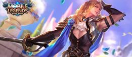

- Alucard
- Miya
- Layla
- Lancelot 
- Bruno
- Karina
- Martis
- Lesley
- Gusion
- Hanabi
Alucard is a very strong hero, when he is sufficiently farmed, especially when he is ahead in farm. He is able to burst down the squishy enemy heroes within mere seconds and yet still have the ability to continue fighting in fights with the low cooldown of his skills, bringing the team to victory if played right.
Gameplay
Head for the Bot lane. Usually I like to kill the minions in the lane as fast as possible so that my wave will be pushed into the enemy’s turret and die without the enemy heroes nearby, denying them the experience. When there are no enemy minions in lane, head to the jungle and kill 1 minion and then go back to lane to continue getting experience.
Do not be afraid to exchange blows with the enemy, you’ll most likely be doing way more damage. If possible, get the Red Buff for Alucard. More damage = more lifesteal. If you have the Retribution Battle Spell, make sure you use it whenever possible to accelerate your farm.
Kill the turtle whenever possible too, Alucard is strong enough at level 4 to solo the Turtle.
Miya is a well rounded Marksman character with incredible offense and an easy difficulty curve. Her skills make her a great damager from afar and great character for any player wanting to main a Marksman
Gameplay
Always go in mid lane if possible because mid lane has the early minions and early minions means quicker exp. After you have cleared the first wave go to jungle the monster back on you jungle. Then go back to kill the second wave then proceed to go to the other side of the jungle to kill another monster in this way you’ll earn more experience and the higher the level the higher the advantage. More damage. Be sure to get the turtle after you get the first item or the first two items.
Make sure your team is busy distracting the enemies in clash for you to take advantage. Keep behind your team and this is necessary because your durability is a flop. If you got hooked or stunned be sure to use you’re 3rd skill to get away and get a new position as quickly as possible and start hitting again. Tell your team to not waste ulti on the enemy tank wait for the enemy to flood the ulti to your teams tank and then start shooting.
With your passive and skills you will not lose a 1 v 1 fight. Your increase attack speed plus tooth of greed and Thors Sting you will get the enemy’s life much faster than he/she damages you.Use 3rd skill tk get position and use 2nd to poke enemy in towers or if they get too close to you.

Being a starter hero, Layla is one of the easiest heroes to use in Mobile Legends: Bang Bang. This Malefic Gunner has an unbelievable aim and range. She can shoot at enemies from great distances. Her skills are not meant to be underestimated. She has the potential to overpower any other hero if used wisely and properly. But before tapping into Layla’s ranged prowess, players must learn how to utilize her destructive skills and abilities.
Layla is fairly strong as a early game due to her abilities, and scales extremely well to the late game as well. Don’t be afraid to join teamfights or help your teammates. If you’re in doubt, farm up! Layla doesn’t have any mobility abilities but she can be quite safe when played properly!
Layla’s range is long among the other heroes, make use of it! Stay safe, attack and position yourself. Do not stay too front, always stay behind your teammates! Feel free to adjust the items according to your playstyle! She works wonders with most of the attack items.
Lancelot was once an immeasurably arrogant man. With his good looks, incomparable skill in fencing, and noble upbringing, he looked down at everything as if the whole world revolved around him. But then one day, he suffered overwhelming defeat and humiliation because of his arrogance. It was the lowest point of his life. Soon after, he met the powerful and beautiful Swan Princess, Odette. He fell in love and vowed to change his ways. From then on, Lancelot promised that he will only use his marvelous fencing skills to protect Princess Odette and uphold peace and harmony in the world.

Bruno is one of the most cheeky hero found in mobile legends as his model is a replica of a soccer player. Unlike Miya or Moskov, Bruno is a singular target marksman but he is equally strong when it comes to dealing damage. With his ultimate, the world wave, bruno is able to deal large amount of damage when enemies are close to each other, increasing Bruno’s critical due to his passive Mecha Legs. With flying tackle, bruno is able to chase down opponent or simply to escape from ganks.
Use your first skill on creeps for laning or when chasing a running opponent to slow them down or maybe to finish them off. Never use your second skill on more than one hero cause you’ll most likely die. Only use it for engaging in 1v1 when you know you can stun the enemy and kill them. When engaging a stronger opponent than you make sure there are minions around so you can use your Ultimate for that extra damage and armor reduction. I’ve killed many careless tanks with this. They ignored my ball hitting them together with the minions then I killed them when they’re half health. Use your spell when fighting 1v1 or for pushing turrets faster. Always use your second skill for running away not for engaging 1v2, 1v3, 1v4 or 1v5. Learn to hide in bushes while pushing. You don’t need to join clashes. Just push fast and escape with your 2nd skill when an enemy comes
When joining clashes always release your ultimate first then run away and let your ball do the work. Just stay at the back of the clash and hit. Always use 2nd skill for running away and never for engaging specially when you don’t have a tank. You don’t need to farm with Bruno since he can lane better than most marksman and poke enemies using his first skill. I also recommend building two mana necklaces when doing this playstyle. During clashes position yourself at the back and always remember to release your ultimate to disrupt enemy formation. When engaging enemies always use 2nd skill first to stun then basic attack enemy till they die. If they somehow survive and use flicker use 2nd skill to chase then use first skill/basic attack to finish them off.
Karina is an insanely strong assassin, who does more damage the lower health your enemy has. She has a great chain killing potential which usually results in Triple Kills to Penta Kills quite often.
Go to your lane and clear the minion waves, make sure you go jungle and clear the jungle monsters, and not to miss out on any minion waves. Don’t forget to use Retribution(if you’re using it) to secure last hits on buffs. Once you hit level 4, it’s time to apply pressure on other lanes. As an Assassin role, you should not stick to one lane only. Go to the mid lane, apply pressure on the enemy carry or better yet, secure a kill for your carry and create space. You can buy an Enchanted Talisman early to aid your mana problems. Do not be afraid to use Elusiveness to move around quicker.
You should be able to dish out quite a decent amount of damage now, and team fights are happening more often. DO NOT rush first into the fights. Initiating as a Karina is a bad idea, you’re going to get CC’d the crap out of you and turn the fight into a 4v5. Instead, wait out and flank and pick off enemies that are running low on health/pressure their carry. Force the enemy carry to move away from his team while you still are able to join in the fight to clean up.
When you are facing up against another Karina, it is important to get more farm than her. In teamfights, do not engage first as your health will be low enough for the enemy Karina to burst you down. Instead, wait out for your team to lower the enemy’s health so that you can combo them out, and escape from the enemy Karina. Your Elusiveness will block the enemy Karina’s Elusiveness’ slow from proccing, so you can escape. If you’re dying too much, consider if you’re playing too aggressive without any backing of your team.
Martis’ attack is a combination between his skills and his basic attack. His basic attack will be very dangerous because of his attack speed bonus from his passive skill. Prioritize to level up first sill and ultimate skill whenever possible. You can use any combination skills as you like depend on the situation.
You can be an initiator by using your first skill to CC the enemy’s heroes, escape with your second skill, let your friend enter the fight then finish them with your ultimate skill.
Pay attention to the map. You can roam through the map because Martis has a very high mobility by using his second skill.

Starting early game with build "Windtalker" is the right thing and fast, adding 25% attack speed, 20 movement speed, and 20% critical chance really helps Lesley to keep the area early in the game. Passive attack gives additional damage when giving basic attack for 4 times, raises 125 magic damage to 3 enemies on next attack. Just after this item the players have to spend "Rapid Boots" to give the movement to Lesley.
After that we start with items that can add physical attacks and give a critical chance, on the third item "Berserker's Fury" can be the right choice. Give effect 65 physical attacks and 25% critical chance. Each attack happens critical, then for 2 seconds the attack increases 5% is the passive effect of this item.
Walking in the 10th minute, go into the game's stages of prevention, so it's not wrong to add a little Hp and Mana as well as some damage effects. "Endless Battle" This item can add 65 physical attacks, 25 magic power, 250 HP, 300 Mana, and 5% movement speed, and 15% lifesteal plus the passive effect of basic attack attacks will then provide an additional 70% of physical attacks. Combine this item with "Malefic Roar" then it will add 60 physical as well as passive effects add 40% penetration.
Complete the opponent's misery "Blade of Despair" This item adds 170 Attack Physical Attack and 10% Attack Speed. Has a passive effect that is additional 10% Damage to enemy heroes who are in a state terskill (Stun, thrown to the air, transformed, disable).
Farming is the main key to make Gusion's damage higher, so a lot of farming is needed in early game. Bottom lane is recommended to start your game. Hide in a bush to perform sudden attack.
Make your second skill a priority. Don’t be stingy for your skills, use it whenever it’s needed. Be agile and play with your skills a lot. Always aim if you wanted to cast your skill, especially your first skill and ultimate.
As a Marksman hero, Hanabi is certainly very weak, especially during early games. Hanabi can focus towards the side lane to spend minions quickly using 1 Ninjutsu skill: Petal Barrage and take hermit crabs for extra gold. When activating skill 1, what you must note is when is the right time to enable and disable skill guys. Because which is extravagant, you can also use the skill 2 Ninjutsu Soul Scroll to recharge. To make it strong, Hanabi should have at least an item movement, coupled with an item of lifesteal and attack speed items. There is also Hanabi must do the right positioning in the attack so it is not easy for the enemy to attack.
The most important thing in doing team fight is the right time of entry along with the positioning that you must pay attention to. The first time, you can use the ultimate Forbidden Jutsu skill: Higanbana towards the enemy to create immobilized effects. When the enemy attack is busy gathering, you can use the skill of 1 Ninjutsu: Petal Barrage to produce a bouncing attack. You can also take advantage of the unique skills of this skill that can bounce to the tower. Lastly, if enemies try to escape you can use Ninjutsu 2 skills: Soul Scroll to slow down enemies and add back where is Hanabi.
About